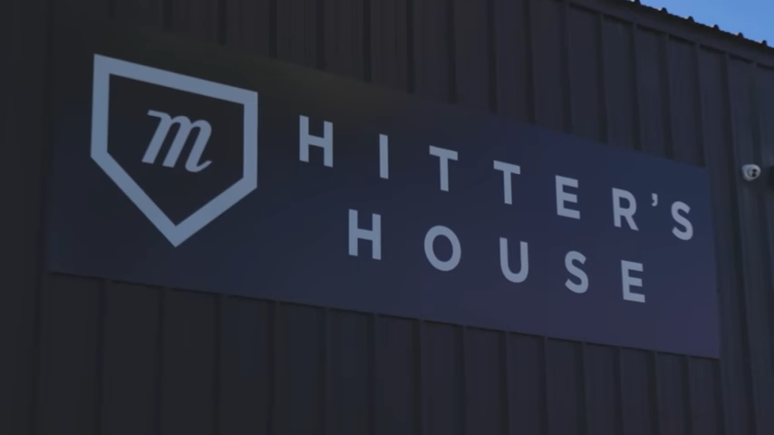
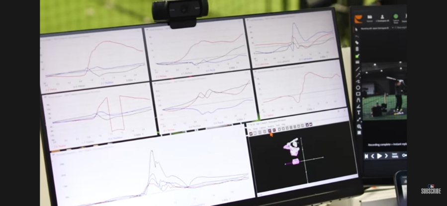

메이저리그 선수를 위한
맞춤형 배트 제작
같은 배트라고 다 같은 배트가 아닙니다. 선수의 팔 길이, 키, 손목 위치까지 분석해 꼭 맞는 배트를 설계하는 시대. 최첨단 기술로 야구 배트를 만드는 과정을 소개합니다.
데이터로 만드는 배트
미국 루이지애나 배턴루지에 있는 베이스볼 퍼포먼스 랩(Baseball Performance Lab)에서는 뉴욕 양키스 유망주 제이슨 도밍게스(Jasson Domínguez)의 맞춤형 배트를 제작한 사례가 있습니다.
이곳에서는 모션 캡처, 포스 플레이트, 트랙맨(TrackMan) 등 다양한 최첨단 기술을 동원해 배트를 만듭니다. 선수마다 팔 길이, 키, 손목-바닥 거리 등 신체적 특성이 다르기 때문에, 배트도 그에 맞게 달라져야 하니까요. 신체 프로파일을 분석한 뒤 다양한 배트를 직접 테스트합니다.

스위치 히터에겐 좌우 다른 배트가 필요하다
도밍게스처럼 양쪽 타석에 모두 서는 스위치 히터는, 좌·우 타석에서 동일한 배트로는 최고의 성능을 내지 못한다는 데이터가 있습니다. 그래서 타석에 따라 서로 다른 맞춤형 배트가 필요하다는 것이죠.

테스트에서 실물 제작까지
테스트 결과를 바탕으로 그 선수에게 최적화된 배트를 설계하고, CAD 모델링을 거쳐 실제 배트를 제작합니다. 감(感)이 아니라 데이터로 장비를 맞추는 시대인 셈입니다.
📌 3줄 요약
- 미국의 한 랩은 모션 캡처·트랙맨 등으로 선수 신체를 분석해 맞춤형 야구 배트를 만든다.
- 스위치 히터는 좌·우 타석 성능이 달라, 타석별로 다른 배트가 필요하다.
- 테스트 → CAD 모델링 → 실물 제작으로 이어지는, 데이터 기반 장비 최적화 시대다.
생각해보기 ▸ 나에게 꼭 맞는 운동 장비(신발·라켓·배트 등)를 써 본 경험이 있나요? 장비가 실력에 얼마나 영향을 준다고 생각하나요?